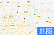
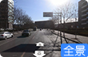

890/1366
火警
未处理0
已处理0
全部0
更多
| 报警时间 | 单位名称 | 警情描述 |
|---|
基础信息


更多
单位名称
单位地址
联系电话
消防力量
故障 0
监管 0
屏蔽 0
更多
| 报警时间 | 单位名称 | 警情描述 |
|---|
联网单位
联网用户0
在线设备0
在线率0
灭火器到期
维保进度
巡查异常
更多
-
即将报废
-
灭火器总数
巡查完成数
单位统计
行业
等级


所有系统
- 所有系统
- 灭火系统
- 电气火灾
- 报警系统
- 防火分隔
- 气体系统
- 燃气系统
- 应急疏散
- 无线烟感
- 防排烟系统
故障
RTU异常
火警
全部消防力量
- 全部消防力量
- 室外消火栓
- 消防水源
- 单位微型消防站
- 公共微型消防站
- 中队
- 大队
- 支队
- 职业消防队
24小时报警单位记录
| 序号 | 单位名称 |
|---|